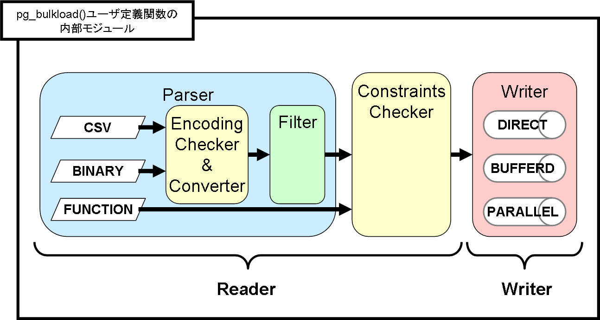

名前
pg_bulkload -- 一定の制約条件の下で大量のデータを高速にロードするためのプログラムです。
概要
pg_bulkload [ OPTIONS ] [ controlfile ]
説明
重要な制約: pg_bulkloadは、PITRやレプリケーション環境では期待どおりに動作しません。詳細はこちらを参照してください。
pg_bulkload は、大量のデータを高速に投入する目的のためのツールです。
データベース制約のチェックの有無や、エラーデータをスキップして投入を継続するか否かを制御でき、入力データに応じた柔軟なデータができます。
たとえば、あるデータベースに格納されている情報を別のデータベースへ移送するような状況では、データの整合性は既に確認済みですので、細かなチェックは省いてとにかく高速にデータをロードできます。
一方、別のツールの出力など整合性が怪しい場合には、制約をチェックしながら投入できます。
pg_bulkload は元々は PostgreSQL 組み込みのデータロード用コマンドである COPY を上回る性能を目指して開発されました。
バージョン 3.0 以降はさらに入力データの検証機能やフィルタによる変換機能を備え、ETL ツールの T (Transform) と L (Load) を強力にサポートします。
バージョン 3.1 では、テーブルの他に固定長のバイナリファイルへ出力できます。
入力データの整合性を確認しながらバイナリファイルに変換できるため、出力されたバイナリファイルのテーブルへのロード時間を短縮できます。
また、マルチプロセス実行機能を改良し、入力ファイルの読み込みと、テーブルデータの書き込みを別プロセスで並列に実行することにより、さらに高速にロードできるようになりました。
ご利用の際はなるべく最新バージョンにてお願い致します。古いバージョンにて発覚した不具合についてはリリースノートを参照ください。
使用例
pg_bulkload を利用するユーザが直接扱うプログラムは以下の2つです。
postgresql スクリプト
pg_ctl コマンドのラッパコマンドで、PostgreSQL サーバを起動・停止するプログラムです。
postgresql スクリプトの内部で pg_ctl コマンドを呼び出しています。
また、pg_bulkload によるロード中にサーバがダウンした場合、pg_bulkload コマンドを呼び出して自動的に独自のリカバリを行う機能を持っています。
pg_bulkload を利用する場合、必ずこの postgresql スクリプトを使用してください。
下記の "使用上の注意と制約" を必ず読んでください。
特に、pg_bulkload を DIRECT モードまたは PARALLEL モードで使った際のリカバリに関係します。
DIRECT モードはデフォルトの設定であるため、ほとんどのユーザに影響があります。
pg_bulkload
データのロードを行うために呼び出すプログラムです。
内部で pg_bulkload() ユーザ定義関数を呼び出して、PostgreSQL サーバ内で実際のロード処理を行います。
pg_bulkload() ユーザ定義関数は、pg_bulkload のインストール時に作成されます。
次の 3 ステップにより、pg_bulkload でロードすることが可能です。
- ロードに関する設定を記述する制御ファイルを作成し、ロード対象のテーブル名、入力ファイルのパスなどを指定します。
"sample_csv.ctl" もしくは "sample_bin.ctl" を参考にして下さい。
- $PGDATA/pg_bulkload ディレクトリが存在することを確認してください。そのディレクトリにはロードステータスファイルが作成されます。
- 制御ファイルを引数としてコマンドを実行します。
$ pg_bulkload sample_csv.ctl
NOTICE: BULK LOAD START
NOTICE: BULK LOAD END
0 Rows skipped.
8 Rows successfully loaded.
0 Rows not loaded due to parse errors.
0 Rows not loaded due to duplicate errors.
0 Rows replaced with new rows.
オプション
pg_bulkload では、下記のコマンドライン引数を指定できます。
ロードオプション
ロード内容を指定するためのパラメータです。
-
-i INPUT
--input=INPUT
--infile=INPUT
- ロードの入力データソースを指定します。
制御ファイルの設定項目の "INPUT" と同じです。
-
-O OUTPUT
--output=OUTPUT
- データの出力先を指定します。
制御ファイルの設定項目の "OUTPUT" と同じです。
-
-l LOGFILE
--logfile=LOGFILE
- ロード処理の結果を記録するログファイルのパスを指定します。
制御ファイルの設定項目の "LOGFILE" と同じです。
-
-P PARSE_BADFILE
--parse-badfile=PARSE_BADFILE
- 入力データのパース時に見つかった不良レコードを記録するBADファイルのパスを指定します。
制御ファイルの設定項目の "PARSE_BADFILE" と同じです。
-
-u DUPLICATE_BADFILE
--duplicate-badfile=DUPLICATE_BADFILE
- インデックスメンテナンス処理で見つかった一意制約違反の不良レコードを記録するBADファイルのパスを指定します。
制御ファイルの設定項目の "DUPLICATE_BADFILE" と同じです。
-
-o "key=val"
--option="key=val"
-
制御ファイルで指定可能な設定項目を指定します。
複数の設定項目を指定することもできます。
接続オプション
PostgreSQL に接続するためのパラメータです。
-
-d DBNAME
--dbname=DBNAME
- 接続するデータベース名を指定します。
データベース名が指定されていない場合、データベース名はPGDATABASE 環境変数から読み取られます。
この変数も設定されていない場合は、接続時に指定したユーザ名が使用されます。
- -h HOSTNAME
--host=HOSTNAME
- サーバが稼働しているマシンのホスト名を指定します。ホスト名がスラッシュから始まる場合、Unix ドメインソケット用のディレクトリとして使用されます。
- -p PORT
--port=PORT
- サーバが接続を監視する TCP ポートもしくは Unix ドメインソケットファイルの拡張子を指定します。
- -U USERNAME
--username=USERNAME
- 接続するユーザ名を指定します。pg_bulkloadの実行ユーザは、スーパユーザ権限が必要です。
- -W
--password
- データベースに接続する前に、pg_bulkload は強制的にパスワード入力を促します。
サーバがパスワード認証を要求する場合 pg_bulkload は自動的にパスワード入力を促しますので、これが重要になることはありません。
しかし、pg_bulkload は、サーバにパスワードが必要かどうかを判断するための接続試行を無駄に行います。
こうした余計な接続試行を防ぐために -W の入力が有意となる場合もあります。
一般オプション
- -e
--echo
- サーバに送信するSQLを表示します
- -E
--elevel = LEVEL
- ログ出力レベルを設定します。
DEBUG, INFO, NOTICE, WARNING, ERROR, LOG, FATAL, PANIC から選択します。
デフォルトは INFO です。
- --help
- ヘルプを表示し、終了します
- --version
- バージョン情報を出力し、終了します
制御ファイル
pg_bulkload では、データのロード方法を制御ファイルで指定できます。制御ファイルはクライアント側に配置してください。
絶対パスでも相対パスでも指定できます。
相対パスで指定した場合は、pg_bulkload コマンド実行時のカレントディレクトリが基準となります。
省略する場合は pg_bulkload コマンドのコマンドライン引数でロード方法を指定してください。
制御ファイルには、下記の設定項目を指定できます。
なお、"#" 以降はコメントとして無視されます。
フォーマット共通の設定項目
- TYPE = CSV | BINARY | FIXED | FUNCTION
-
入力データのタイプを以下のいずれかで指定します。
デフォルトは CSV です。
- CSV : CSV フォーマットのテキストデータを読み込みます。
- BINARY | FIXED : 固定長のバイナリデータを読み込みます。
- FUNCTION : 関数が返した行セットを読み込みます。
このタイプを指定した場合は、INPUT に関数呼び出し式を指定してください。
- INPUT | INFILE = path | stdin | [ schemaname. ] function_name (argvalue, ...)
-
ロードの入力データソースを指定します。
必須のパラメータです。
使用する入力データに応じて、以下のように指定します。
- サーバ上のファイル :
サーバ上でのパスで入力ファイルのパスを指定します。
相対パスで指定した場合、制御ファイルで指定した場合は制御ファイル相対として、pg_bulkload コマンド引数として指定した場合は実行時のカレントディレクトリ相対として扱われます。
PostgreSQL プロセスを起動したユーザにファイルに対する読み込み権限を与える必要があります。
「TYPE=CSV」および「TYPE=BINARY」と指定した場合のみ使用可能です。
- pg_bulkload コマンドの標準入力 :
「INPUT=stdin」と記述すると、pg_bulkload コマンドの標準入力から入力データを読み取ります。
入力ファイルとデータベースが異なるサーバに配置されている場合には、こちらの形式を使用してください。「TYPE=CSV」および「TYPE=BINARY」と指定した場合のみ使用可能です。使用例を以下に示します。
$ pg_bulkload csv_load.ctl < DATA.csv
- SQL関数：入力データを返す SQL 関数の呼び出し式を指定します。
「TYPE=FUNCTION」と指定した場合のみ使用可能です。
組み込みの関数だけでなく、ユーザ定義関数を指定することも可能です。
この形式で使用するSQL関数は、SETOF sometype型、もしくは、RETURNS TABLE(columns)を返す必要があります。
ただし、sometype型は、各属性の型も定義をしてください。内部的にcstring型を
利用していますが、record型では、各属性の代入キャストが出来ないケースがあるためです。
なお、大量のデータをロードする場合には PL/pgSQL ではなく C言語での関数作成を推奨します。
ストリーミング・ロードを行うため SFRM_ValuePerCall モードで実装される必要があるためです。
ユーザ関数の定義例を以下に示します。
$ CREATE TYPE sample_type AS (sum integer, name char(10));
$ CREATE FUNCTION sample_function() RETURNS SETOF sample_type
AS $$ SELECT id1 + id2, upper(name) FROM INPUT_TABLE $$
LANGUAGE SQL;
制御ファイルの作成例を以下に示します。
TABLE = sample_table
TYPE = FUNCTION
WRITER = DIRECT
INPUT = sample_function() # ユーザ定義の関数を利用する場合
#INPUT = generate_series(1, 1000) # 組み込みの関数を利用する場合。1から1,000の連番をロードする
...
- WRITER | LOADER = DIRECT | BUFFERED | BINARY | PARALLEL
-
ロード方式を以下のいずれかで指定します。デフォルトは DIRECT です。
- DIRECT : テーブルに直接データをロードします。高速ですが特殊なリカバリ手順が必要です。WALを極力スキップし、共有バッファも汚しません。（※トランザクション管理上必要なWALは出力します。）
- BUFFERED : 共有バッファを使用してテーブルにデータをロードします。特殊なリカバリは不要です。ただし、WALを書き、共有バッファも汚します。
- BINARY : バイナリファイルに出力します。バイナリファイルと同じディレクトリに、出力したバイナリファイルをロードするためのサンプル制御ファイルを出力します。サンプル制御ファイルのファイル名は <バイナリファイル名>.ctl となります。
- PARALLEL : 「WRITER=DIRECT」と「MULTI_PROCESS=YES」を指定した場合と同じです。
「WRITER=PARALLEL」と指定した場合は、MULTI_PROCESS は無視されます。
なお、ロード先のデータベースに対してパスワード認証を必要とする場合には .pgpass を設定しなければなりません。
詳細は使用上の注意と制約を参照して下さい。
- OUTPUT | TABLE = { [ schema_name. ] table_name | outfile }
-
データの出力先を指定します。
必須のパラメータです。
ロード方式に応じて、以下のように指定します。
- ロード先のテーブル :
ロード先のテーブルを指定します。
schema_name を省略した場合は、search_path に指定した検索パスから見つかったテーブルを使用します。
「WRITER=DIRECT」、「WRITER=BUFFERED」および「WRITER=PARALLEL」と指定した場合のみ使用可能です。
- サーバ上のファイル :
サーバ上でのパスで出力ファイルのパスを指定します。
相対パスで指定した場合の扱いは INPUT と同じです。
PostgreSQL プロセスを起動したユーザに親ディレクトリに対する書き込み権限を与える必要があります。
「WRITER=BINARY」と指定した場合のみ使用可能です。
- SKIP | OFFSET = n
-
先頭から何行をスキップするかを指定します。
デフォルトは 0 です。
ただし「TYPE=FUNCTION」とSKIP の両方を指定した場合はエラーになります。
- LIMIT | LOAD = n
-
ロード行数を指定します。
デフォルトは指定なし、または INFINITE (全行ロード) です。
「TYPE=FUNCTION」と指定した場合でも使用可能です。
- ENCODING = encoding
-
入力データのエンコーディングを指定します。
入力データのエンコーディングを検証し、必要に応じてエンコーディングを変換します。
もし入力データのエンコーディングの正当性が保証されており、かつ DB エンコーディングと同じ場合には、この設定項目を指定しないことで、検証と変換をスキップして高速にロードできます。
デフォルトでは、エンコーディングの正当性チェックも変換も行いません。
ただし「INPUT=stdin」と指定した場合のデフォルトは client_encoding の値を使用します。
ENCODING を「TYPE=FUNCTION」と同時に指定した場合はエラーになります。
-
有効なエンコーディングについては Built-in Conversions を参照してください。
設定値と処理内容の関係を以下の表に示します。
-
| |
DB エンコーディング |
| SQL_ASCII |
SQL_ASCII 以外 |
| ENCODING |
指定なし |
正当性チェックも変換もしない |
正当性チェックも変換もしない |
| SQL_ASCII |
正当性チェックも変換もしない |
正当性チェックのみ |
| SQL_ASCII 以外で DB エンコーディングと同じ |
正当性チェックのみ |
正当性チェックのみ |
| SQL_ASCII 以外で DB エンコーディングと違う |
正当性チェックのみ |
エンコーディング変換 |
- FILTER = [ schema_name. ] function_name [ (argtype, ... ) ]
-
入力データを変換するユーザ定義関数 (FILTER 関数) を指定します。
argtype は省略可能ですが、関数を一意に特定できない場合はエラーになります。
指定しない場合は、入力データの変換を行いません。
FILTER 関数の作り方は FILTER 関数の作り方に示しています。
-
FILTER オプションは、「TYPE=FUNCTION」と FILTER の両方を指定した場合はエラーになります。
また、CSV フォーマット固有の設定項目の FORCE_NOT_NULL と FILTER の両方を指定した場合はエラーになります。
- CHECK_CONSTRAINTS = YES | NO
-
ロード時に CHECK 制約を検査するかどうかを指定します。
デフォルトは NO です。
CHECK_CONSTRAINTS を「WRITER=BINARY」と同時に指定した場合はエラーになります。
- PARSE_ERRORS = n
-
パース処理、エンコーディングチェック、エンコーディング変換、FILTER 関数の実行、CHECK 制約適用、非 NULL 制約適用およびデータ型変換時に発生したエラーの許容件数を指定します。
エラーを許容された不良データはロードされず、PARSE BADFILE に記録されます。
デフォルトは 0 です。
発生したエラーの件数がこの値を超えた場合は、その時点でコミットして残りの入力データのロードは行いません。
エラーを1件も許容しない場合は 0 を、全てのエラーを許容する場合は -1 または INFINITE を指定します。
- DUPLICATE_ERRORS = n
- 一意制約違反の許容件数を指定します。エラーを許容された一意制約違反のレコードはロードされず、DUPLICATE_BADFILE に記録されます。
デフォルトは 0 です。
一意制約に違反するレコードの数がこの値を超えた場合は、その時点でロールバックしてロード処理全体を取り消します。
エラーを1件も許容しない場合は 0 を、全てのエラーを許容する場合は -1 または INFINITE を指定します。
DUPLICATE_ERRORS を「WRITER=BINARY」と同時に指定した場合はエラーになります。
- ON_DUPLICATE_KEEP = NEW | OLD
- 一意制約違反のレコードが存在した場合の挙動を以下のいずれかで指定します。
削除されたレコードの内容は DUPLICATE_BADFILE に書き出されます。
デフォルトは NEW です。
このオプションを利用する場合、DUPLICATE_ERRORS も 0 より大きな数に設定する必要があります。
ON_DUPLICATE_KEEP を「WRITER=BINARY」と同時に指定した場合はエラーになります。
- NEW : 入力データに存在するレコードを残し、既にテーブルに存在していたレコードを削除します。
入力データ内に一意制約違反となるレコードが存在していた場合は、ファイルの末尾側のレコードを残します。
- OLD : 既にテーブルに存在するレコードを残し、入力データに存在するレコードを削除します（ロードしません）。
- LOGFILE = path
-
処理内容を記録するログファイルのパスを指定します。
相対パスで指定した場合の扱いは INPUT と同じです。
デフォルトは $PGDATA/pg_bulkload/<タイムスタンプ>_<DB名>_<スキーマ名>_<テーブル名>.log です。
- PARSE_BADFILE = path
-
パース処理、エンコーディングチェック、エンコーディング変換、FILTER 関数の実行、CHECK 制約適用、非 NULL 制約適用およびデータ型変換時に見つかった不良レコードを記録するBADファイルのパスを指定します。
このファイルには、入力ファイルと同じ形式(CSVまたは固定長)で記録されます。
相対パスで指定した場合の扱いは INPUT と同じです。
デフォルトは $PGDATA/pg_bulkload/<タイムスタンプ>_<DB名>_<スキーマ名>_<テーブル名>.bad.<入力ファイルの拡張子> です。
- DUPLICATE_BADFILE = path
-
一意制約違反の不良レコードを記録する BAD ファイルのパスを指定します。
このファイルには、入力ファイルの形式によらず CSV 形式で記録されます。
相対パスで指定した場合の扱いは INPUT と同じです。
デフォルトは $PGDATA/pg_bulkload/<タイムスタンプ>_<DB名>_<スキーマ名>_<テーブル名>.dup.csv です。
DUPLICATE_BADFILE を「WRITER=BINARY」と同時に指定した場合はエラーになります。
- TRUNCATE = YES | NO
-
YES の場合は、データロードの前にテーブルから全ての行を削除します。
内部的には SQL の TRUNCATE 相当の処理を行っています。
NO の場合は削除しません。デフォルトは NO です。
TRUNCATE を「WRITER=BINARY」と同時に指定した場合はエラーになります。
- VERBOSE = YES | NO
-
YES の場合は、入力データのパース時に見つかった不良データのエラーログおよび一意制約違反のエラーログをサーバログにも出力します。
NO の場合はサーバログに出力しません。デフォルトは NO です。
- MULTI_PROCESS = YES | NO
-
YES の場合は、データの読み取り、パース処理および書き出しをそれぞれ異なるプロセスまたはスレッドで実行します。
NO の場合は並行処理を行わず、シングルスレッドで実行します。デフォルトは NO です。
「WRITER=PARALLEL」と指定した場合は、MULTI_PROCESS は無視されます。
なお、ロード先のデータベースに対してパスワード認証を必要とする場合には .pgpass を設定しなければなりません。
詳細は使用上の注意と制約を参照して下さい。
pg_bulkloadのMULTI_PROCESSやPARALLELを有効にして実行する場合、他のPostgreSQLバックエンドプロセスがテーブルスキーマを変更しないようにしてください。
データを読み取るプロセスとデータを書き出すプロセスで見られるテーブルスキーマが異なり、問題が発生する可能性があります。
CSV フォーマット入力特有の設定項目
- DELIMITER = delimiter_character
- デリミタを指定します。
デフォルトは「,」です。ASCII 文字 (1バイト文字) でなければなりません。
タブ区切り形式のファイル (TSV) をロードする場合には、DELIMITER にタブ文字を指定します。
タブ単独だと行末と扱われてしまうため、ダブルクォートで囲んでください。
DELIMITER=" " # a double-quoted tab
コマンドラインから指定する場合には$'\t'を使います。
$ pg_bulkload tsv.ctl -o $'DELIMITER=\t'
- QUOTE = quote_character
- 引用符を指定します。
デフォルトは「"」です。ASCII 文字 (1バイト文字) でなければなりません。
- ESCAPE = escape_character
- エスケープ文字を指定します。
デフォルトは「"」です。ASCII 文字 (1バイト文字) でなければなりません。
- NULL = null_string
- NULL 値を表す文字列を指定します。
デフォルトは空文字列 (長さ 0 の文字列) です。
- FORCE_NOT_NULL = column
- 入力ファイル中の表現が NULL 値文字列であっても NULL として扱わないカラムを 1行 1カラム名で指定します。
複数個指定することが可能です。
フォーマット共通の設定項目の FILTER と FORCE_NOT_NULL の両方を指定した場合はエラーになります。
バイナリフォーマット入力特有の設定項目
- COL = type [ (size) ] [ NULLIF { 'null_string' | null_hex } ]
-
-
入力ファイルの列の定義を左から順に指定します。
列の定義は、型名、開始位置、サイズを組み合わせて指定します。
CHAR と VARCHAR の場合、入力データがテキストであることを表します。
それ以外の場合はバイナリであることを表します。
バイナリの場合はロード先のサーバのエンディアンと一致させてください。
- CHAR | CHARACTER : 文字列として扱い、末尾の空白を取り除きます。サイズの指定が必要です。
- VARCHAR | CHARACTER VARYING : 文字列として扱い、末尾の空白を残します。サイズの指定が必要です。
- SMALLINT | SHOFT : 2バイトの符号付き整数として扱います。
- INTEGER | INT : 2 or 4 or 8バイトの符号付き整数として扱います。デフォルトは 4 です。
- BIGINT | LONG : 8バイトの符号付き整数として扱います。
- UNSIGNED SMALLINT | SHORT : 2バイトの符号無し整数として扱います。
- UNSIGNED INTEGER | INT : 2 or 4バイトの符号無し整数として扱います。デフォルトは 4 です。
- FLOAT | REAL : 4 or 8バイトの浮動小数点実数として扱います。デフォルトは 4 です。
- DOUBLE : 8バイトの浮動小数点実数として扱います。
上記の型に対して、開始位置とサイズを以下のように指定します。
- TYPE : 直前のカラムに続く型ごとの長さ分をカラムデータとみなします。
- TYPE(L) : 直前のカラムに続く L バイト分をカラムデータとみなします。
- TYPE(S+L) : レコード先頭から数えて S バイト目から L バイト分をカラムデータとみなします。
- TYPE(S:E) : レコード先頭から数えて S バイト目から E バイト目までをカラムデータとみなします。
上記の型およびサイズに対して、NULL 値を表す文字列を以下のように指定します。
- NULLIF 'null_string' : 型が CHAR および VARCHAR の場合の NULL 値を表す文字列を指定します。型のサイズと同じサイズになるように指定する必要があります。
- NULLIF null_hex : 型が CHAR および VARCHAR 以外の場合の NULL 値を表すバイナリ値を16進数で指定します。型のサイズと同じサイズになるように指定する必要があります。
上記の他に「COL=L」で指定できます。この指定方法は「COL=CHAR(L)」と同じで、後方互換のために残されています。
- PRESERVE_BLANKS = YES | NO
-
カラムフォーマットを「COL=N」で指定した場合に、カラムデータの末尾の空白を残すかどうかを指定します。
複数個指定することが可能で、PRESERVE_BLANKS を指定した行以降の「COL=N」の扱いを変更します。YES の場合、「COL=N」を「COL=VARCHAR(N)」とみなし、末尾の空白を残します。NO の場合、「COL=CHAR(N)」とみなし、末尾の空白を取り除きます。
デフォルトは NO です。
- STRIDE = n
-
1 行あたりのバイト数を指定します。
指定しない場合は COL パラメータから計算された値を使います。
行の末尾にロードには使用しないパディングが含まれる場合にのみ明示的な指定が必要です。
バイナリフォーマット出力特有の設定項目
- OUT_COL = type [ (size) ] [ NULLIF { 'null_string' | null_hex } ]
-
-
出力ファイルの列の定義を左から順に指定します。
列の定義は、型名、開始位置、サイズを組み合わせて指定します。
CHAR と VARCHAR の場合、入力データがテキストであることを表します。
それ以外の場合はバイナリであることを表します。
バイナリの場合はロード先のサーバのエンディアンと一致させてください。
- CHAR | CHARACTER : 固定長文字列として出力します。サイズの指定が必要です。指定したサイズよりも文字列が短い時は、末尾が空白で埋められます。サンプル制御ファイルに「COL=CHAR(size)」として出力されます。
- VARCHAR | CHARACTER VARYING : 固定長文字列として出力します。サイズの指定が必要です。指定したサイズよりも文字列が短い時は、末尾が空白で埋められます。サンプル制御ファイルに「COL=VARCHAR(size)」として出力されます。
- SMALLINT | SHOFT : 2バイトの符号付き整数として出力します。
- INTEGER | INT : 2 or 4 or 8バイトの符号付き整数として出力します。デフォルトは 4 です。
- BIGINT | LONG : 8バイトの符号付き整数として出力します。
- UNSIGNED SMALLINT | SHORT : 2バイトの符号無し整数として出力します。
- UNSIGNED INTEGER | INT : 2 or 4バイトの符号無し整数として出力します。デフォルトは 4 です。
- FLOAT | REAL : 4 or 8バイトの浮動小数点実数として出力します。デフォルトは 4 です。
- DOUBLE : 8バイトの浮動小数点実数として出力します。
上記の型およびサイズに対して、NULL 値を表す文字列を以下のように指定します。指定しない場合に NULL 値が入力された場合は、不良データとして PARSE_BADFILE に記録されます。
- NULLIF 'null_string' : 型が CHAR および VARCHAR の場合の NULL 値を表す文字列を指定します。型のサイズと同じサイズになるように指定する必要があります。
- NULLIF null_hex : 型が CHAR および VARCHAR 以外の場合の NULL 値を表すバイナリ値を16進数で指定します。型のサイズと同じサイズになるように指定する必要があります。
環境変数
以下の環境変数に影響されます。
-
PGDATABASE
PGHOST
PGPORT
PGUSER
- デフォルトの接続パラメータです。
また、このユーティリティは、他のほとんどの PostgreSQL ユーティリティと同様、libpq でサポートされる環境変数を使用します。
詳細については、環境変数の項目を参照してください。
使用上の注意と制約
PostgreSQL 12のプラガブルなテーブルアクセスメソッドをサポート。
pg_bulkload「ヒープ」構造のテーブルへのデータロードのみサポートしています。
PostgreSQL 12では新しいプラガブルなテーブルアクセスメソッドAPIを通過するように修正されていることになりますが、
pg_bulkloadは「ヒープ」構造以外はサポートしません。
pg_bulkload の終了コード
データロードが正常に終了した場合は 0 が返ります。
ロードは完了してもパースエラーや一意性エラーによりロードできない行が発生している場合には、WARNING メッセージと共に 3 が返ります。
この際、スキップされた行 (Rows skipped) や、置換された行 (Rows replaced, ON_DUPLICATE_KEEP = NEW) が存在する場合も正常終了 (返値 0) 扱いであることに注意してください。
ロード中にエラーが発生した場合には ERROR が報告されます。
エラーの多くはロード中にサーバで生じるため、1 がほとんどです。
終了コードの一覧を以下の表に示します。
| 終了コード |
意味 |
| 0 |
正常終了 |
| 1 |
PostgreSQL へのSQLでエラー |
| 2 |
PostgreSQL への接続に失敗 |
| 3 |
準正常終了(ロードされない入力データあり) |
ダイレクトロードで使用する場合
ダイレクトロードで使用する場合 (WRITER=DIRECT または PARALLEL)、以下のことに注意しなければなりません：
PostgreSQL 起動手順
pg_bulkload がクラッシュし、.loadstatus ファイルが $PGDATA/pg_bulkload に残っていた場合、データベースは pg_bulkload 独自のリカバリ手順によってリカバリする必要があります。これは "pg_bulkload -r" コマンドを "pg_ctl start" より前に実行することにより行います。PostgreSQL の起動・停止を postgresql スクリプトにより行うことで、このリカバリをし忘れることを防ぎます。postgresql スクリプトは内部的に "pg_bulkload -r" を実行し、続けて "pg_ctl start" を行っています。そのためダイレクトロードの利用環境下では、pg_ctl を直接使わずに、postgresql スクリプトを利用することをお勧めいたします。
PITR/Replication
適切なWAL を残さないため、pg_bulkloadを利用したときのWALを用いてアーカイブログリカバリ(PITR)を行うことは推奨できません。もし PITR を利用する場合には、pg_bulkloadによるロード終了後に対象のデータベースのバックアップを取って、そこからを起点に実施してください。ストリーミングレプリケーションを利用している場合は、ロード終了後のバックアップからスタンバイを作り直してください。
$PGDATA/pg_bulkload 内のロードステータスファイル
$PGDATA/pg_bulkload ディレクトリ中のロードステータスファイル (*.loadstatus) は絶対に削除してはいけません。 pg_bulkload のリカバリのために必要になるからです。
kill -9は使わない
pg_bulkload を "kill -9" を使って停止させるのはできる限りやめてください。もし実行すると postgresql スクリプトによるリカバリが実行されます。
パラレルロードで使用する場合
パラレルロードで使用する場合(MULTI_PROCESS=YES または WRITER=PARALLEL)、以下のことに注意しなければなりません：
認証における制約
MULTI_PROCESS=YESかつロード対象のデータベースにlocalhostから接続するのにパスワードが必要な場合、たとえパスワードを正しくプロンプトに入力しても、パスワード認証に失敗してしまいます。この問題を回避するには、以下のいずれかを設定してください。
-
localhost からのアクセスの認証方式に trust を指定する
localhost からの接続には、UNIX 環境では UNIX ドメインソケット接続を使用し、Windows 環境では TCP/IP ループバック接続を使用します。UNIX 環境では以下の行を pg_hba.conf ファイルに追加します。
# TYPE DATABASE USER CIDR-ADDRESS METHOD [for UNIX]
local all foo trust
Windows 環境では以下の行を pg_hba.conf ファイルに追加します。
# TYPE DATABASE USER CIDR-ADDRESS METHOD [for Windows]
host all foo 127.0.0.1/32 trust
-
パスワードを.pgpassファイルに指定する
もし trust 認証がセキュリティ上問題であれば、認証方式を password または md5 に指定した上で、パスワードを.pgpassファイルに指定してください。ただし、.pgpassファイルは、PostgreSQLサーバを起動したOSユーザ(典型的には"postgres"ユーザ)のホームディレクトリに配置する必要があります。例えば、pg_bulkloadが、ポート番号5432で稼働しているサーバに、パスワードが"foopass"であるユーザ"foo"として接続する場合では、管理者は以下の行を.pgpassファイルに追加します。
localhost:5432:*:foo:foopass
-
WRITER=PARALLE を使用しない
.pgpass も指定できない場合は WRITER=PARALLE を使用できないため、WRITER=DIRECT を指定してください。
PostgreSQLサーバを起動したOSユーザのクライアントエンコーディング
PostgreSQLサーバを起動したOSユーザのクライアントエンコーディングは、DBエンコーディングを指定してください。
データベース制約の扱い
デフォルトでは、ロード時のデータの整合性は、一意制約と非NULL制約のみ適用します。
CHECK 制約を適用する場合は "CHECK_CONSTRAINTS=YES" を指定してください。
外部キー制約は適用しません。
入力データセットの妥当性についてはユーザにより保証してください。
詳細
内部構成
以下に pg_bulkload の内部構成を示します。

ファイル、標準入力、SQL関数のそれぞれを入力とした場合の構成を以下に示します。
FILTER 関数の作り方
以下に FILTER 関数を作る際の注意点や制約を示します。
- 入力データの 1 行分のデータが、FILTER 関数の引数として渡されます。
- 関数を実行した結果、エラーが発生した場合は、そのレコードはロードされずに PARSE BADFILE に記録されます。
- FILTER 関数の返り値は record 型またはテーブル型で作成する必要があります。また、関数の実行によって実際に返されるレコードのデータ型は、ロード対象のテーブルの列定義と一致する必要があります。
- 関数が NULL を返した場合は、全ての列が NULL のレコードをロードします。
- 引数にデフォルト値を持つ関数に対応しています。入力データの列数が関数の引数の数に満たない場合に、デフォルト値が適用されます。
- 可変長引数を取る関数 (VARIADIC 引数を持つ関数) には対応していません。
- 集合を返す関数 (SETOF 修飾子を持つ関数) には対応していません。
- 多様SQL関数 (多様型を引数に持つ関数) には対応していません。
- FILTER 関数を実装する言語は問いません。SQL, C言語, 手続型言語のどの言語で実装しても構いませんが、何度も呼び出されるため効率の良い実装が求められます。
- FILTER と FORCE_NOT_NULL 設定項目はどちらか一方しか指定できないため、FILTER 関数を使用したい場合に FORCE_NOT_NULL の機能が必要な場合は、 FILTER 関数に FORCE_NOT_NULL 機能を実装してください。
作成例を以下に示します。
CREATE FUNCTION sample_filter(integer, text, text, real DEFAULT 0.05) RETURNS record
AS $$ SELECT $1 * $4, upper($3) $$
LANGUAGE SQL;
インストール方法
pg_bulkload のインストールは、標準の contrib モジュールと同様です。
環境設定
pg_bulkload をインストールする前に以下を実行しているものとします。
- PostgreSQL がインストールされていること
- initdb を実行し、データベースクラスタが作られていること
ソースコードからのインストール
ソースコードからインストールするには、以下のライブラリが必要です。利用しているLinuxディストリビューションに応じたものをインストールしてください。
- PostgreSQL devel package : postgresqlxx-devel(RHEL), postgresql-server-dev-x.x(Ubuntu)
- PAM devel package : pam-devel(RHEL), libpam-devel(Ubuntu)
- Readline devel or libedit devel package : readline-devel or libedit-devel(RHEL), libreadline-dev or libedit-dev(Ubuntu)
- C compiler and build utility : "Development Tools" (RHEL), build-essential(Ubuntu)
必要なライブラリが揃っていれば、pgxs を使ってビルドできます。「USE_PGXS=1」オプションは省略可能です。
$ cd pg_bulkload
$ make USE_PGXS=1
$ su
# make USE_PGXS=1 install
CREATE EXTENSION文を用いて pg_bulkload 用の関数を登録します。ただし、CREATE EXTENSION文はDBスーパーユーザにて実行してください。
$ psql database_name
database_name=# CREATE EXTENSION pg_bulkload;
RPM パッケージからのインストール
通常の RPM パッケージのインストール手順と同様です。
pg_bulkload インストール前に postgresql パッケージがインストールされていることを確認してください。
次のコマンドで pg_bulkload をインストールします。
# rpm -ivh pg_bulkload-<version>.rpm
以下のコマンドでインストールされたかどうかを確認できます。
# rpm -qa | grep pg_bulkload
また、以下のコマンドで、各ファイルがどこにインストールされたかを確認できます。
# rpm -qs pg_bulkload
ソースコードからのインストール同様、CREATE EXTENSION文を用いて pg_bulkload 用の関数を登録します。ただし、CREATE EXTENSION文はDBスーパーユーザにて実行してください。
$ psql database_name
database_name=# CREATE EXTENSION pg_bulkload;
なお、regression testを行うにはPostgreSQLサーバを起動させた状態で、以下のコマンドを実行してください。
$ make installcheck
アップグレード方法
pg_bulkload を新しいバージョンにアップグレードする場合、前のバージョンを削除する必要があります。
次の3ステップにより、pg_bulkloadをアップグレードすることが可能です。
- DROP EXTENSION文を実行し、古いバージョンの pg_bulkload を database からドロップします。
database_name# DROP EXTENSION pg_bulkload;
DROP EXTENSION
- 古いバージョンの pg_bulkload を削除します。
ソースコードからインストールした場合:
# make USE_PGXS=1 uninstall
RPM パッケージからインストールした場合:
# rpm -e pg_bulkload-<version>.rpm
- インストール方法の手順に沿って、新しいバージョンの pg_bulkload をインストールします。
動作環境
- PostgreSQLバージョン
- PostgreSQL 11, 12, 13, 14, 15, 16
- OS
- RHEL 7, 8, 9
リリースノート
3.1.21
- PostgreSQL 16に対応
- バージョンが適切に表示されない問題を修正しました。
- 一意制約違反を許容している場合でも、一意制約違反でロード時にエラーが発生する問題を修正しました。
3.1.20
3.1.19
3.1.18
- バージョン3.1.17で残されていた"-o TYPE=FUNCTION" オプション使用時の問題について、当該オプション使用する際の注意点をドキュメントに追記しました
- Ubuntu環境において、ビルドが失敗する問題を修正しました
3.1.17
- PostgreSQL 13に対応
- Bツリーインデックスに対してマージする場合、エラーが発生した問題を解決しました
3.1.16
- PostgreSQL 12に対応
- pg_bulkloadのPARALLELやMULTI_PROCESS機能を有効化して使用する場合、いくつかの注意点をドキュメントに追加しました
- pg_bulkloadは「ヒープ」構造のテーブルのみサポートすることをドキュメントに追加しました
3.1.15
- PostgreSQL 11に対応
- CVE-2018-1058の脆弱性に対してpg_bulkloadを修正しました
3.1.14
- PostgreSQL 10に対応
- RPMの名前を標準名前ルールに変更
pg_bulkload-VERSIONX_X_X-X.pgXX.rhelX.rpmからpg_bulkload-X.X.XX-X.pgXX.rhelX.rpmへ
3.1.13
- MULTI_PROCESSモードが有効かつ入力ファイルに不正なレコードが含まれる場合にpg_bulkloadがクラッシュする問題を修正しました。
- CSVParserRead()が大量のメモリを要求しないよう修正しました。以前は、この動作によりエラーが発生することがありました。
3.1.12
- --version オプション時に表示されるバージョン番号が適切でありませんでした。
3.1.11
- DIRECTモードでデータをロードする際にデータチェックサムの値を誤って設定する可能性がありました。
3.1.10
3.1.9
- PostgreSQL 9.5 に対応しました。
- 動的にPostgreSQLにロードされる他のライブラリと競合することで発生しうる意図しない挙動を防ぐように修正しました
3.1.8
- PostgreSQL 9.4.1, 9.3.6, 9.2.10, 9.1.15, 9.0.19において、CHECK 制約を有効にしたロードを行った際に PostgreSQL がクラッシュする可能性がありました。
3.1.7
3.1.6
- WRITER=PARALLELモードを利用した際、環境変数PGHOSTのハンドリングが適切に行われていませんでした。これにより、PostgreSQLのunix_socket_directory(9.3以降はunix_socket_directories)設定値をデフォルトから変更していた場合、WRITER=PARALLELモードでのロードが動作しませんでした。
- PostgreSQL9.2.4以降で、SQL以外で作成したFILTER関数を使用した際に、ロードに失敗する不具合がありました。
- PostgreSQL 9.4beta1に対応しました。
3.1.5
- PostgreSQL9.3に対応しました。
- UNLOGGEDテーブルの取り扱い時に誤ってWALを出力する不具合がありました。
3.1.4
- PostgreSQL9.2.4において、SQLで作成したFILTER関数を用いてデータをロードした際、メモリリークが発生する不具合がありました。
- postgresqlスクリプトに、現在は廃止されたpg_bulkloadのオプションに関するコードが残っていました。
3.1.3
- WRITER=PARALLELモードを利用した際、一部データが正しくロードされない場合がありました。
- ストリーミング・レプリケーション構成のPostgreSQLに対して、マスタ側にWRITER=BUFFERDモードでデータをロードした際、スレーブ側のテーブルのインデックスが破損する場合がありました。
関連項目
COPY
{kind=link}
{kind=link}
{kind=link}